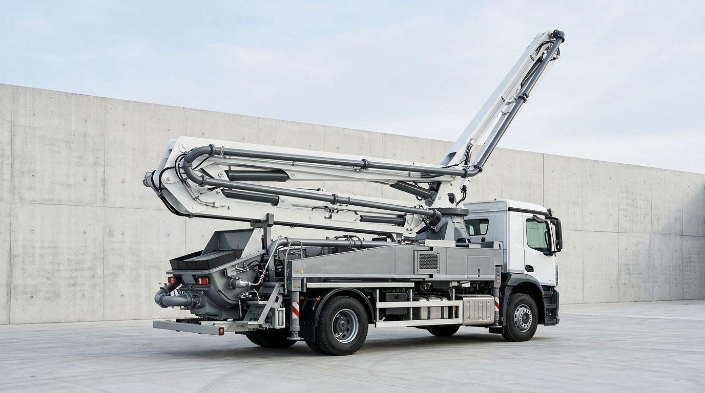

Kurumsal
BOZKURT Endüstri; sanayi üretimine yönelik yatırımlarıyla beton teknolojileri ve iş makineleri alanında iki markayı aynı mühendislik kültürü altında bir araya getirir.
Sanayiye yatırım,
mühendisliğe güven.
BOZKURT Endüstri, yenilikçilik ve teknolojiyi merkeze alan vizyonuyla sanayi üretimi alanında yatırım yapar. Bünyesindeki markaların tasarım, imalat ve satış sonrası süreçlerini tek bir kalite zinciri altında yönetir.
2025 yılında Betonstar'ın gruba katılmasıyla birlikte beton pompası üretiminde köklü bir deneyim ve 50'den fazla ülkeye uzanan bir ihracat ağı kazanıldı. Bu birikim, iş makineleri alanındaki Fermec markasıyla birlikte aynı üretim ve servis altyapısından besleniyor.
"Ürettiğimiz her makine, sahada kesintisiz çalışmak üzere tasarlanır."
BOZKURT Endüstri

Bugüne gelen yol,
ileriye giden plan.
Grup yapısının oluşumundan bugüne uzanan adımlar; ardından önümüzdeki dönem için çizdiğimiz yol haritası.
-
01 Kuruluş
BOZKURT Endüstri'nin kuruluşu
Sanayi üretimine odaklanan yatırım vizyonunun temeli atıldı. Grup; katma değerli üretim yapan, mühendislik birikimi güçlü markaları bünyesine katma stratejisini belirledi.
-
02 Katılım 2025
Betonstar gruba katıldı
2008'den bu yana İzmir Torbalı'da beton pompası üreten Betonstar, BOZKURT Endüstri bünyesine geçti. Marka; ürün geliştirme, kurumsal kimlik ve satış organizasyonunda kapsamlı bir dönüşüm sürecine girdi.
-
03 Genişleme
Fermec ile iş makineleri alanı
Kazıcı-yükleyici segmentindeki Fermec markası gruba katıldı. Böylece ürün gamı beton teknolojilerinden iş makinelerine genişledi; iki marka ortak üretim ve servis altyapısını paylaşmaya başladı.
-
04 Bugün
İki marka, ortak üretim gücü
Betonstar ve Fermec; 70.000 m² entegre üretim kampüsü, ortak kalite standardı ve 50'den fazla ülkeye uzanan satış ağıyla faaliyet gösteriyor.
-
05 İleride
Yeni pazarlar, daha geniş ürün gamı
Üretim kapasitesinin artırılması, ihracat ağının genişletilmesi ve yeni ürün ailelerinin geliştirilmesi öncelikli başlıklarımız arasında.
Dört adımda tek kalite zinciri
Tasarımdan sahaya kadar her aşama aynı sisteme bağlıdır; bir adımdaki geri bildirim bir sonrakinin girdisi olur.
Ar-Ge ve Tasarım
Hidrolik sistemler, bom geometrisi ve kontrol yazılımı kendi mühendislik ekibimizce geliştirilir.
Entegre Üretim
Robotik kaynak hatları, çelik işleme ve montaj aynı kampüs içinde tek akışta ilerler.
Kalite ve Test
Her makine, sevkiyat öncesinde yük ve performans testlerinden geçer.
Global Servis
50'den fazla ülkede bayi ve distribütör yapılanması, yerel teknik destek.
İki marka, tek üretim disiplini.
Beton pompaları ve iş makineleri; aynı kampüste, aynı kalite zincirinde ve aynı saha verisiyle üretilir.
Sahada kesintisiz
beton pompalama
Kamyona monte bomlu pompalar, mikserli pompalar ve sabit pompa çözümleri; kendi hidrolik ve kontrol mühendisliğimizle Torbalı'daki entegre kampüste üretilir. Bom geometrisi ve Smartstar kontrol sistemi, sahadan gelen verilerle sürekli güncellenir.
- Kapasite
- 140m³/h
- Erişim
- 50m
- Bom
- 7kesim

 Bomlu pompa · entegre montaj hattı
Bomlu pompa · entegre montaj hattı
Tek makinede
kazı, yükleme, tesviye
Kazıcı-yükleyici (beko loder) serisi; güçlendirilmiş şasi mimarisi, yüksek hidrolik verim ve panoramik kabini aynı makinede birleştirir. Teleskopik bom seçenekleri sayesinde dar alanlarda dahi geniş uygulama esnekliği sunar.
- Aktarma
- 4x4
- Görüş
- 360°
- Makine
- 1

 Kazıcı-yükleyici · saha uygulaması
Kazıcı-yükleyici · saha uygulaması
Ortak üretim zinciri
Her model, gerçek şantiye koşullarında yük testine tabi tutulur; servis kayıtları bir sonraki üretimin girdisi olur.
-
01
Çelik işleme ve robotik kaynak
-
02
Montaj hattı ve hidrolik devreye alma
-
03
Yük, basınç ve performans testleri
-
04
Sevkiyat ve saha devreye alma desteği
Standart, belgeden önce sahadadır
Üretim süreçleri; kalite yönetim sistemi, CE uygunluk işaretlemesi ve tescilli Ar-Ge Tasarım Merkezi çalışmalarıyla desteklenir. Nihai ölçüt, makinenin müşteri sahasındaki kesintisiz çalışmasıdır.
Markalarımızı yakından tanıyın.
Betonstar ve Fermec ürün gruplarını, teknik detayları ve marka web sitelerini tek sayfada bulabilirsiniz.